Tema 5 XPath
Ejercicio 3
- 1. Nombre de la Universidad.
/universidad/nombre
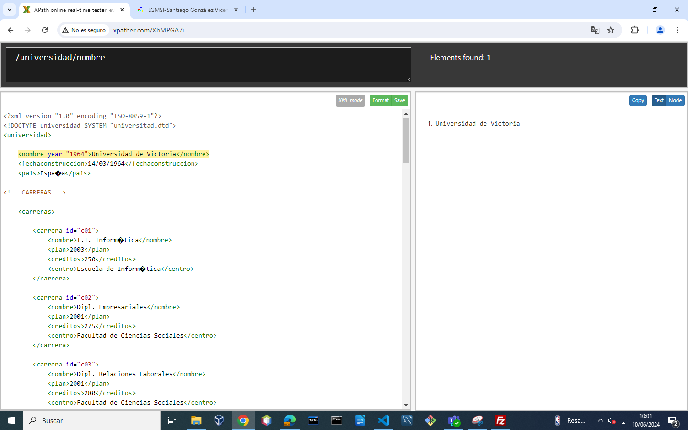
- 2. Pais de la Universidad.
/universidad/pais
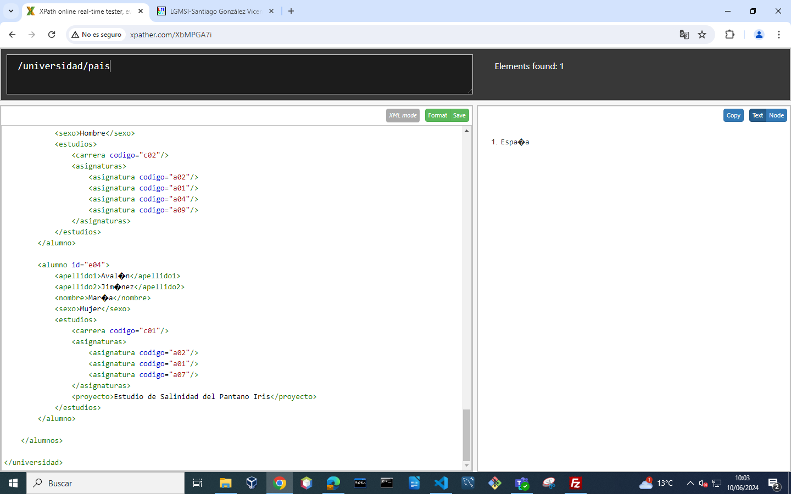
- 3. Nombres de las Carreras.
//carrera/nombre
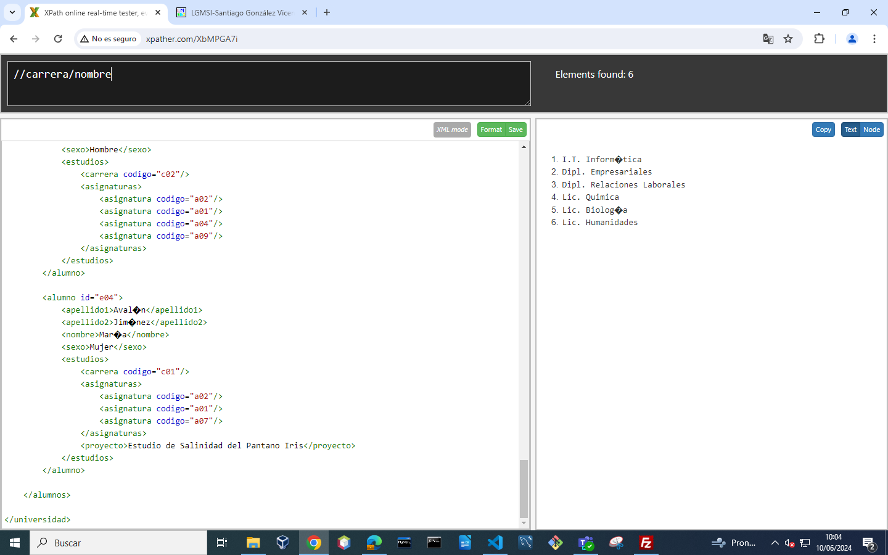
- 4. Años de plan de estudio de las carreras.
//carrera/plan
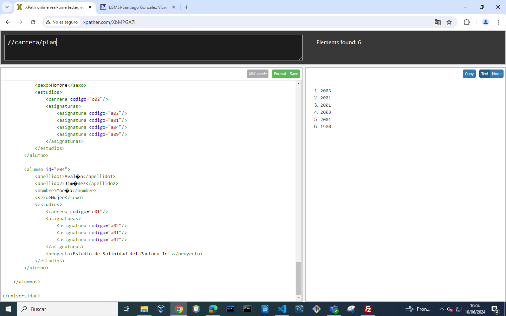
- 5. Nombres de todos los alumnos.
//alumno/nombre
- 6. Identificadores de todas las carreras.
//carrera/@id
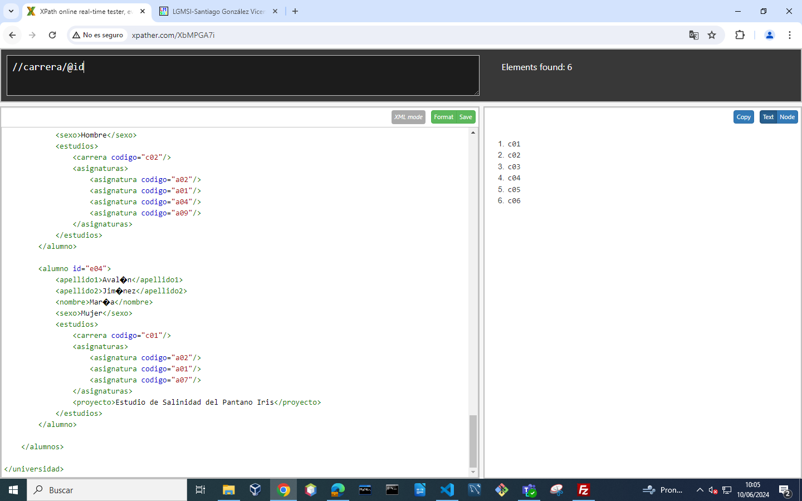
- 7. Datos de la carrera cuyo id es c01.
//carrera[@id='c01']
- 8. Centro en que se estudia de la carrera cuyo id es c02.
//carrera[@id='c02']/centro
- 9. Nombre de las carreras que tengan subdirector.
//subdirector/../nombre
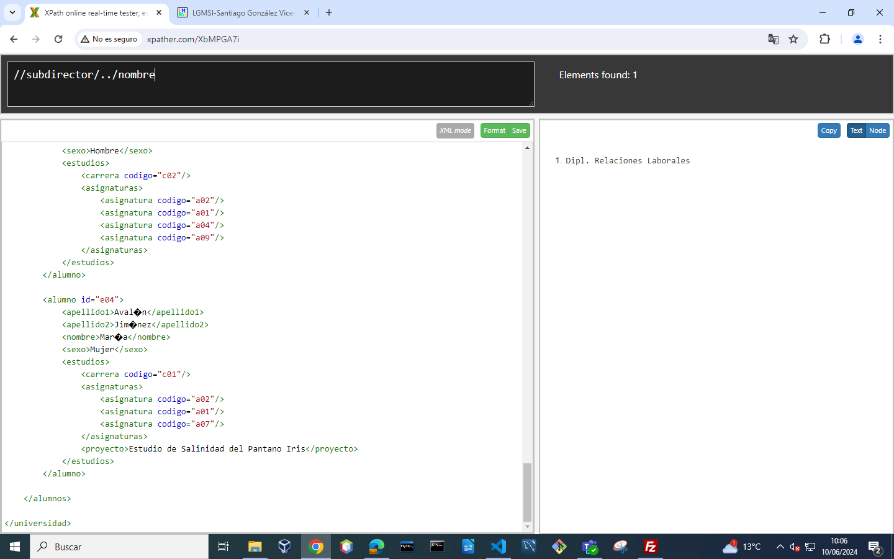
- 10. Nombre de los alumnos que estén haciendo proyecto.
//alumno//proyecto/../../nombre
- 11. Códigos de las carreras en las que hay algún alumno matriculado.
//alumno//carrera/@codigo
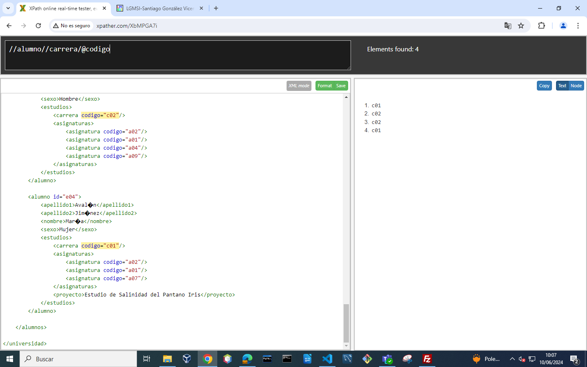
- 12. Apellidos y Nombre de los alumnos con beca.
//alumno[@beca]/nombre | //alumno[@beca]/apellido1 | //alumno[@beca]/apellido2
- 13. Nombre de las asignaturas de la titulación c04.
//asignatura[@titulacion='c04']/nombre
- 14. Nombre de las asignaturas de segundo trimestre.
//asignatura[trimestre=2]/nombre
- 15. Nombre de las asignaturas que no tienen 4 créditos teóricos.
//asignatura[not(creditos_teoricos=4)]/nombre
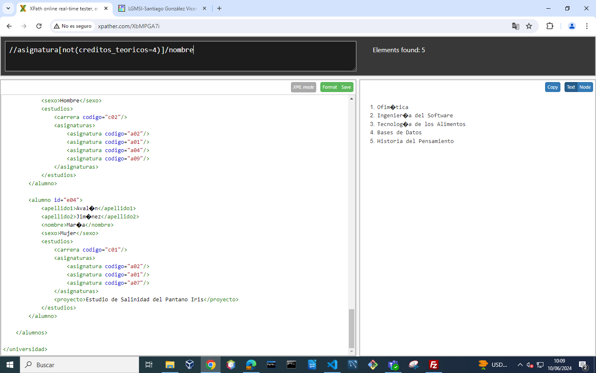
- 16. Código de la carrera que estudia el último alumno.
//alumno[last()]//carrera/@codigo

- 17. Código de las asignaturas que estudian mujeres.
//alumno[sexo='Mujer']//asignatura/@codigo
- 18. Nombre de los alumnos que matriculados en la asignatura a02.
//alumno[.//asignatura/@codigo='a02']/nombre
- 19. Códigos de las carreras que estudian los alumnos matriculados en alguna asignatura.
//alumno//asignatura/../../carrera/@codigo
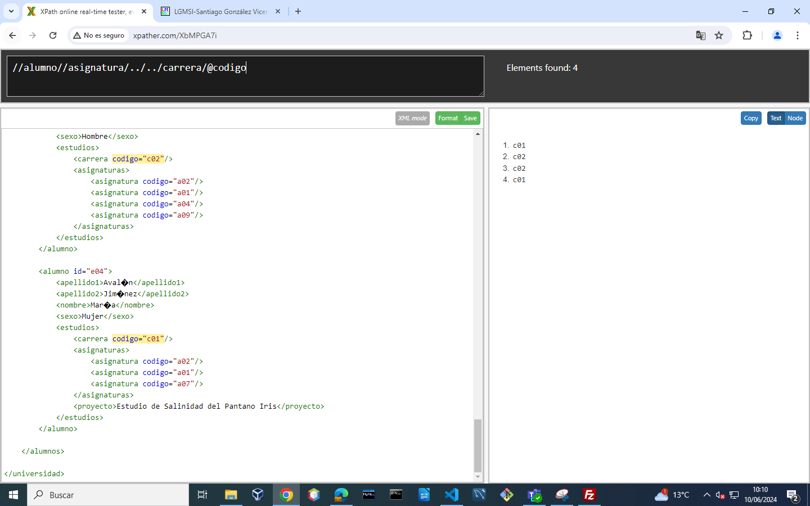
- 20. Apellidos de todos los hombres.
//alumno[sexo='Hombre']/apellido1 | //alumno[sexo='Hombre']/apellido2
- 21. Nombre de la carrera que estudia Víctor Manuel.
//carrera[@id=//alumno[nombre='Víctor Manuel']//carrera/@codigo]/nombre
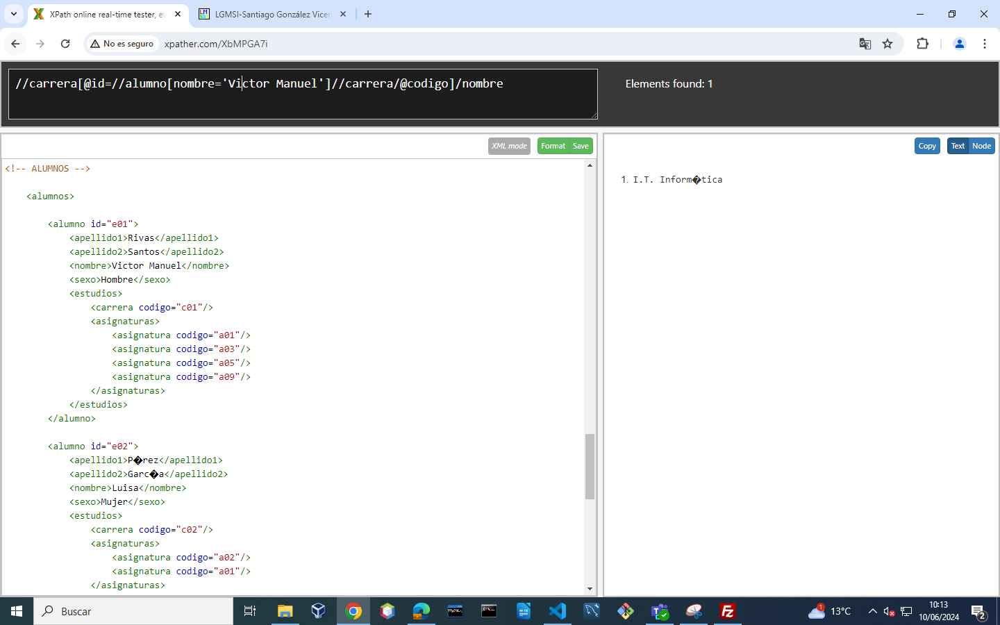
- 22. Nombre de las asignaturas que estudia Luisa.
//asignatura[@id=//alumno[nombre='Luisa']//asignatura/@codigo]/nombre
- 23. Primer apellido de los alumnos matriculados en Ingeniería del Software.
//alumno[.//asignatura/@codigo=//asignatura[nombre='Ingeniería del Software']/@id]/apellido1
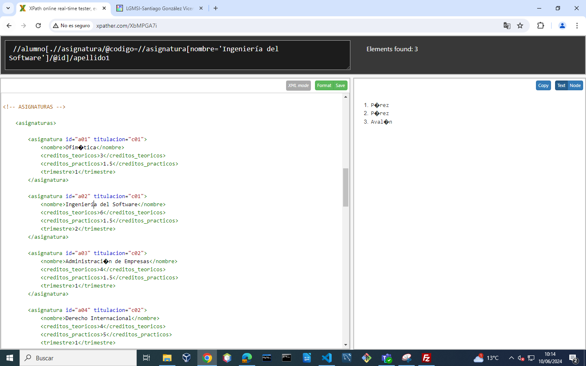
- 24. Nombre de las carreras que estudian los alumnos matriculados en la asignatura Tecnología de los Alimentos.
//carrera[@id=//alumno[.//asignatura[@codigo=//asignatura[nombre='Tecnología de los Alimentos']/@id]]//carrera/@codigo]/nombre
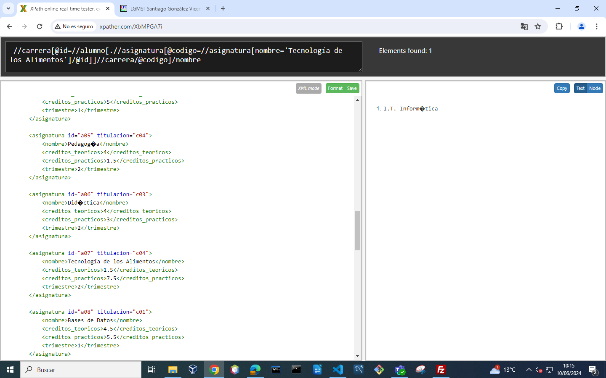
- 25. Nombre de los alumnos matriculados en carreras que no tienen subdirector.
//alumno[not (.//carrera/@codigo=//carrera[subdirector]/@codigo)]/nombre
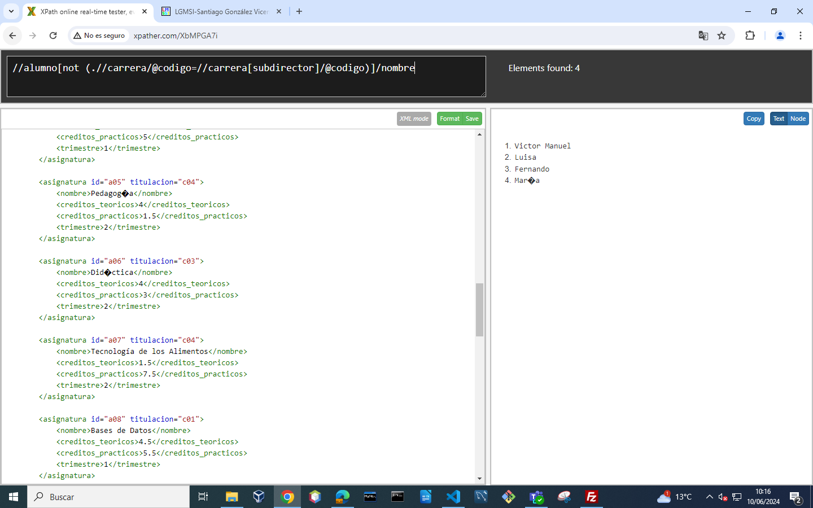
- 26. Nombre de los alumnos matriculados en asignaturas con 0 créditos prácticos y que estudien la carrera de I.T. Informática .
//alumno[.//asignatura/@codigo=//asignatura[creditos_practicos=0]/@id][.//carrera/@codigo=//carrera[nombre='I.T. Informática']/@id]/nombre
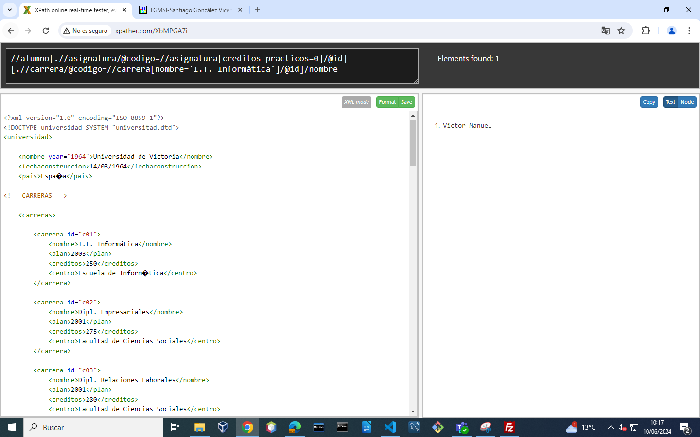
- 27. Nombre de los alumnos que estudian carreras cuyos planes son anteriores a 2002.
//alumno[.//carrera/@codigo=//carrera[not(plan>=2002)]/@id]/nombr
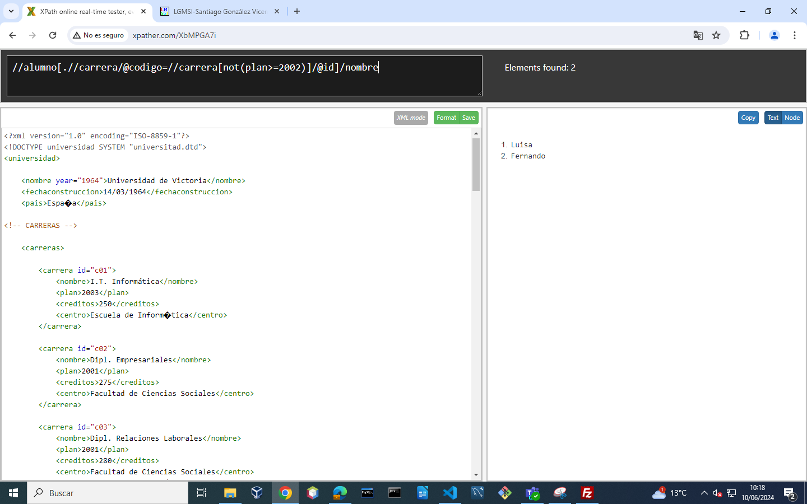